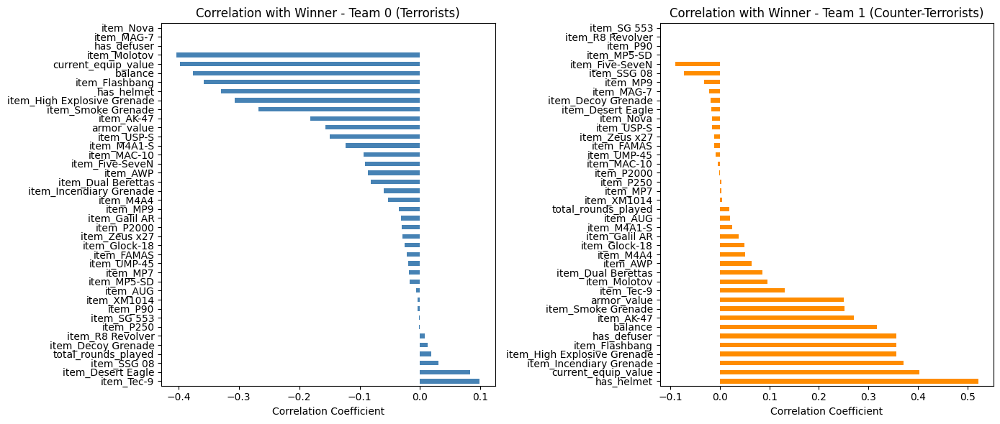
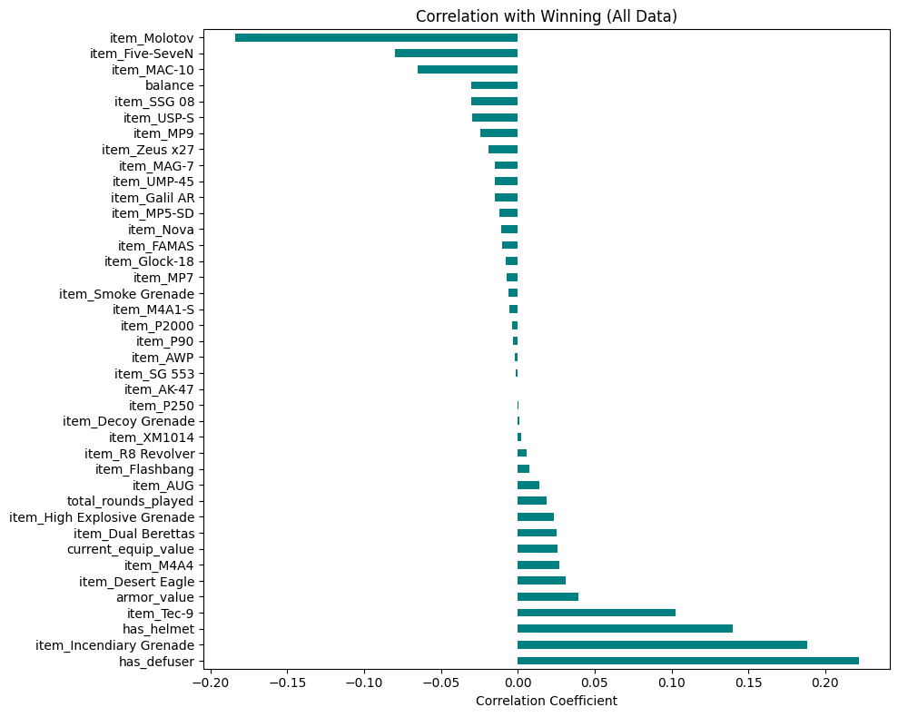
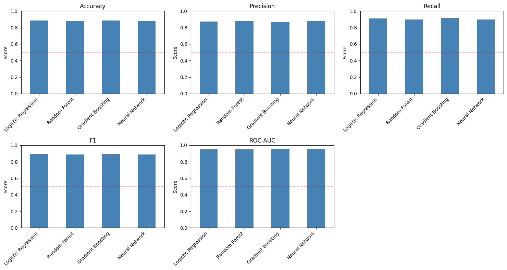
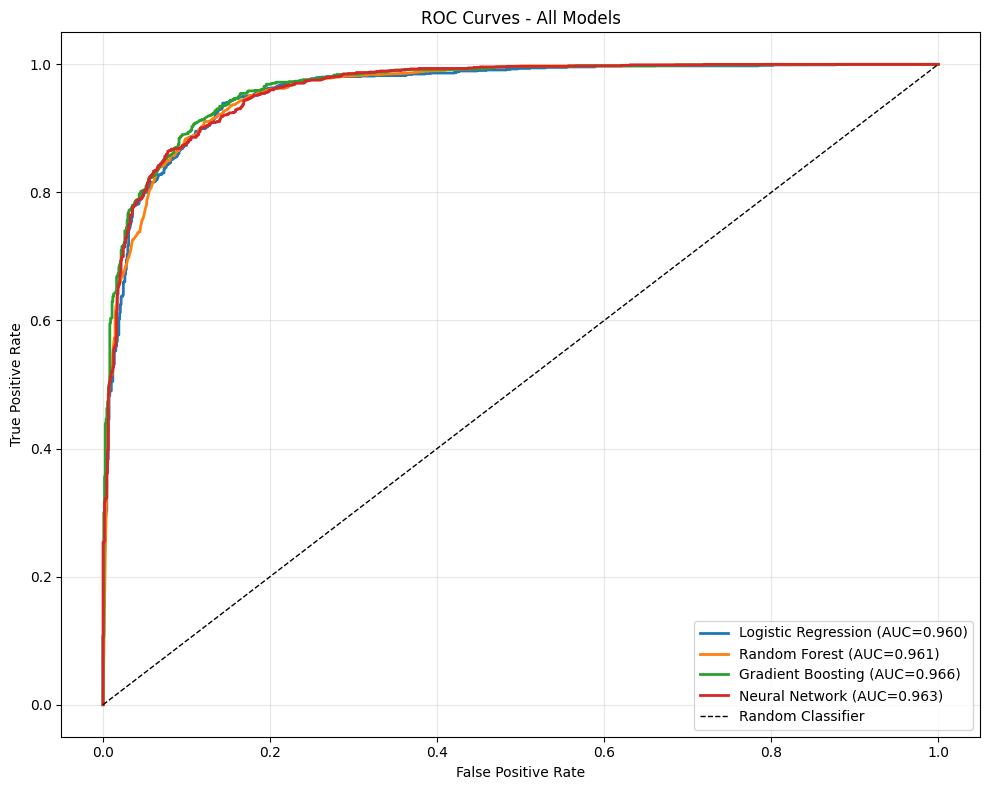
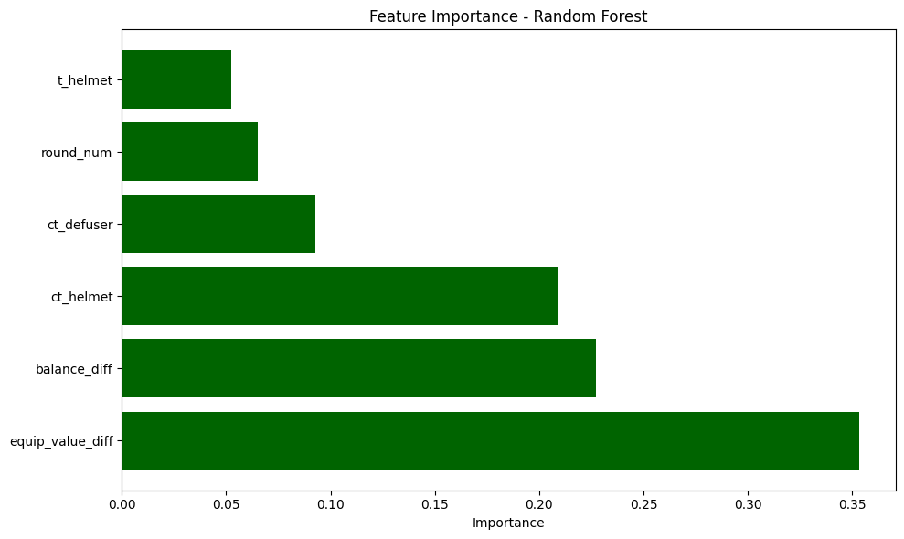
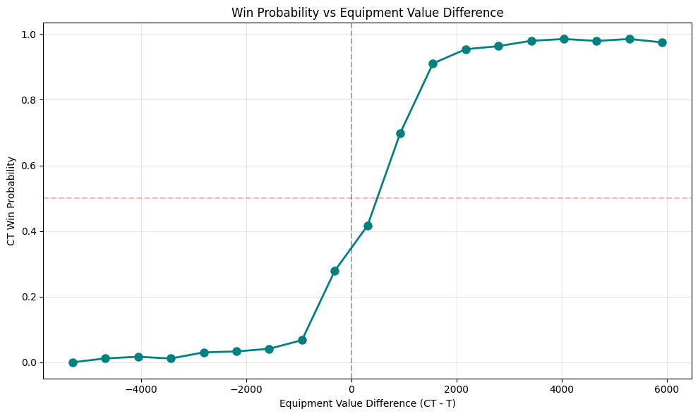

#imports
import pandas as pd
import numpy as np
import matplotlib.pyplot as plt
import seaborn as sns
from sklearn.preprocessing import StandardScaler
from sklearn.model_selection import GroupKFold
from sklearn.linear_model import LogisticRegression
from sklearn.ensemble import RandomForestClassifier, GradientBoostingClassifier
from sklearn.neural_network import MLPClassifier
from sklearn.metrics import accuracy_score, precision_score, recall_score, f1_score, roc_auc_score, roc_curve, aucSupervised Learning Models
#load data file and review structure
df_original = pd.read_parquet("all_cs2_majors_econ_data.parquet")
print("First 10 rows (raw):")
df_original.head(10)First 10 rows (raw):| match_id | round | total_rounds_played | player_name | current_equip_value | balance | armor_value | has_helmet | has_defuser | inventory | team_num | winner | |
|---|---|---|---|---|---|---|---|---|---|---|---|---|
| 0 | ecstatic-vs-themongolz-nuke | 1.0 | 0.0 | salazar | 850.0 | 150.0 | 100.0 | False | False | [Butterfly Knife, USP-S] | 3.0 | UNKNOWN |
| 1 | ecstatic-vs-themongolz-nuke | 1.0 | 0.0 | mzinho | 850.0 | 150.0 | 100.0 | False | False | [Butterfly Knife, Glock-18] | 2.0 | UNKNOWN |
| 2 | ecstatic-vs-themongolz-nuke | 1.0 | 0.0 | Senzu | 850.0 | 150.0 | 100.0 | False | False | [Bayonet, Glock-18] | 2.0 | UNKNOWN |
| 3 | ecstatic-vs-themongolz-nuke | 1.0 | 0.0 | Techno | 850.0 | 150.0 | 100.0 | False | False | [Butterfly Knife, Glock-18, C4 Explosive] | 2.0 | UNKNOWN |
| 4 | ecstatic-vs-themongolz-nuke | 1.0 | 0.0 | 910 | 1350.0 | 150.0 | 100.0 | False | False | [M9 Bayonet, Glock-18, High Explosive Grenade,... | 2.0 | UNKNOWN |
| 5 | ecstatic-vs-themongolz-nuke | 1.0 | 0.0 | bLitz | 1000.0 | 0.0 | 0.0 | False | False | [Butterfly Knife, Glock-18, Smoke Grenade] | 2.0 | UNKNOWN |
| 6 | ecstatic-vs-themongolz-nuke | 1.0 | 0.0 | Nodios | 850.0 | 150.0 | 100.0 | False | False | [Karambit, USP-S] | 3.0 | UNKNOWN |
| 7 | ecstatic-vs-themongolz-nuke | 1.0 | 0.0 | Patti | 400.0 | 0.0 | 0.0 | False | False | [Butterfly Knife, Flashbang, USP-S] | 3.0 | UNKNOWN |
| 8 | ecstatic-vs-themongolz-nuke | 1.0 | 0.0 | kraghen | 850.0 | 150.0 | 100.0 | False | False | [Karambit, P2000] | 3.0 | UNKNOWN |
| 9 | ecstatic-vs-themongolz-nuke | 1.0 | 0.0 | Queenix | 850.0 | 150.0 | 100.0 | False | False | [M9 Bayonet, USP-S] | 3.0 | UNKNOWN |
#Removing rows where winner is not known
if "winner" in df_original.columns:
initial_count = len(df_original)
df_original = df_original[df_original["winner"] != "UNKNOWN"]
removed_count = initial_count - len(df_original)
print(f"\nRemoved {removed_count} rows where winner = UNKNOWN")
print(f"Remaining rows: {len(df_original)}")
Removed 8001 rows where winner = UNKNOWN
Remaining rows: 118207#Converting team numbers to be usable
if "team_num" in df_original.columns:
df_original["team_num"] = df_original["team_num"].map({2.0: 0, 3.0: 1})
print("\nConverted team_num: 2.0 -> 0 (T), 3.0 -> 1 (CT)")
print(f"team_num dtype: {df_original['team_num'].dtype}")
Converted team_num: 2.0 -> 0 (T), 3.0 -> 1 (CT)
team_num dtype: float64#Remove rows with missing helmet and diffuser values
bool_cols = ["has_helmet", "has_defuser"]
mask_na = df_original[bool_cols].isna().any(axis=1)
rows_with_na = df_original[mask_na]
print(f"\nRows with NA in boolean columns: {len(rows_with_na)}")
print("\nSample rows with NA in boolean columns:")
rows_with_na.head(5)
Rows with NA in boolean columns: 27
Sample rows with NA in boolean columns:| match_id | round | total_rounds_played | player_name | current_equip_value | balance | armor_value | has_helmet | has_defuser | inventory | team_num | winner | |
|---|---|---|---|---|---|---|---|---|---|---|---|---|
| 2199 | heroic-vs-chinggis-warriors-anubis | 18.0 | 17.0 | None | NaN | NaN | NaN | None | None | [] | NaN | CT |
| 13821 | aurora-vs-faze-dust2 | 2.0 | 1.0 | Qikert | NaN | 3300.0 | NaN | None | None | [] | NaN | CT |
| 13832 | aurora-vs-faze-dust2 | 3.0 | 2.0 | Qikert | NaN | 5700.0 | NaN | None | None | [] | NaN | CT |
| 13843 | aurora-vs-faze-dust2 | 4.0 | 3.0 | Qikert | NaN | 9200.0 | NaN | None | None | [] | NaN | T |
| 13854 | aurora-vs-faze-dust2 | 5.0 | 4.0 | Qikert | NaN | 12450.0 | NaN | None | None | [] | NaN | T |
if len(rows_with_na) > 0:
rows_with_na.to_csv('rows_with_na_boolean.csv', index=False)
print("\nSaved rows with NA to 'rows_with_na_boolean.csv'")
df = df_original.copy()
df = df.dropna(subset=bool_cols)
Saved rows with NA to 'rows_with_na_boolean.csv'#added columns for relevant inventory items
if "inventory" in df.columns:
print(f"\nInventory column info:")
print(f"Type: {type(df['inventory'].iloc[0])}")
print(f"Sample values:")
print(df["inventory"].head(10))
all_items = set()
relevant_items = ['AK-47', 'AUG', 'AWP', 'Decoy Grenade', 'Desert Eagle', 'Dual Berettas', 'FAMAS',
'Five-SeveN', 'Flashbang', 'Galil AR', 'Glock-18', 'High Explosive Grenade',
'Incendiary Grenade', 'M4A1-S', 'M4A4', 'MAC-10', 'MAG-7', 'MP5-SD', 'MP7', 'MP9',
'Molotov', 'Nova', 'P2000', 'P250', 'P90', 'R8 Revolver', 'SG 553', 'SSG 08',
'Smoke Grenade', 'Tec-9', 'UMP-45', 'USP-S', 'XM1014', 'Zeus x27']
def make_has_item(item_name):
def has_item(x):
if isinstance(x, np.ndarray):
return 1 if item_name in x else 0
if isinstance(x, list):
return 1 if item_name in x else 0
if isinstance(x, str):
items = [it.strip() for it in x.split(',') if it.strip()]
return 1 if item_name in items else 0
return 0
return has_item
created = 0
for item in relevant_items:
df[f"item_{item}"] = df["inventory"].apply(make_has_item(item))
created += 1
print(f"\nCreated {created} binary inventory columns for relevant items")
Inventory column info:
Type: <class 'numpy.ndarray'>
Sample values:
10 [Butterfly Knife, USP-S, MP9]
11 [Butterfly Knife, Dual Berettas]
12 [Bayonet, P2000, AK-47, Smoke Grenade]
13 [Butterfly Knife, Glock-18, Galil AR]
14 [M9 Bayonet, Dual Berettas, AK-47, Smoke Grena...
15 [Butterfly Knife, Glock-18, MAC-10, Smoke Gren...
16 [Karambit, Five-SeveN, Smoke Grenade, Flashbang]
17 [Butterfly Knife, P250, Incendiary Grenade, Sm...
18 [Karambit, Desert Eagle, Smoke Grenade, Flashb...
19 [M9 Bayonet, USP-S, MP9, Smoke Grenade]
Name: inventory, dtype: object
Created 34 binary inventory columns for relevant items#dataframe cleanup. encoded columns and removed not needed columns
df = df.drop(columns=["match_id", "round", "player_name", "inventory"], errors="ignore")
bool_cols = ["has_helmet", "has_defuser"]
for col in bool_cols:
if col in df.columns:
df[col] = df[col].astype(int)
if "winner" in df.columns:
df["winner"] = (df["winner"] == "CT").astype(int)
numeric_cols = ["current_equip_value", "balance", "armor_value"]
for col in numeric_cols:
if col in df.columns:
df[col] = pd.to_numeric(df[col], errors="coerce")df = df.dropna(subset=numeric_cols)
print("\nCleaned dataframe:")
df.head(10)
Cleaned dataframe:| total_rounds_played | current_equip_value | balance | armor_value | has_helmet | has_defuser | team_num | winner | item_AK-47 | item_AUG | item_AWP | item_Decoy Grenade | item_Desert Eagle | item_Dual Berettas | item_FAMAS | item_Five-SeveN | item_Flashbang | item_Galil AR | item_Glock-18 | item_High Explosive Grenade | item_Incendiary Grenade | item_M4A1-S | item_M4A4 | item_MAC-10 | item_MAG-7 | item_MP5-SD | item_MP7 | item_MP9 | item_Molotov | item_Nova | item_P2000 | item_P250 | item_P90 | item_R8 Revolver | item_SG 553 | item_SSG 08 | item_Smoke Grenade | item_Tec-9 | item_UMP-45 | item_USP-S | item_XM1014 | item_Zeus x27 | |
|---|---|---|---|---|---|---|---|---|---|---|---|---|---|---|---|---|---|---|---|---|---|---|---|---|---|---|---|---|---|---|---|---|---|---|---|---|---|---|---|---|---|---|
| 10 | 1.0 | 2100.0 | 150.0 | 100.0 | 0 | 0 | 1.0 | 0 | 0 | 0 | 0 | 0 | 0 | 0 | 0 | 0 | 0 | 0 | 0 | 0 | 0 | 0 | 0 | 0 | 0 | 0 | 0 | 1 | 0 | 0 | 0 | 0 | 0 | 0 | 0 | 0 | 0 | 0 | 0 | 1 | 0 | 0 |
| 11 | 1.0 | 1300.0 | 3300.0 | 100.0 | 1 | 0 | 0.0 | 0 | 0 | 0 | 0 | 0 | 0 | 1 | 0 | 0 | 0 | 0 | 0 | 0 | 0 | 0 | 0 | 0 | 0 | 0 | 0 | 0 | 0 | 0 | 0 | 0 | 0 | 0 | 0 | 0 | 0 | 0 | 0 | 0 | 0 | 0 |
| 12 | 1.0 | 4600.0 | 50.0 | 100.0 | 1 | 0 | 0.0 | 0 | 1 | 0 | 0 | 0 | 0 | 0 | 0 | 0 | 0 | 0 | 0 | 0 | 0 | 0 | 0 | 0 | 0 | 0 | 0 | 0 | 0 | 0 | 1 | 0 | 0 | 0 | 0 | 0 | 1 | 0 | 0 | 0 | 0 | 0 |
| 13 | 1.0 | 3600.0 | 600.0 | 100.0 | 1 | 0 | 0.0 | 0 | 0 | 0 | 0 | 0 | 0 | 0 | 0 | 0 | 0 | 1 | 1 | 0 | 0 | 0 | 0 | 0 | 0 | 0 | 0 | 0 | 0 | 0 | 0 | 0 | 0 | 0 | 0 | 0 | 0 | 0 | 0 | 0 | 0 | 0 |
| 14 | 1.0 | 5200.0 | 150.0 | 100.0 | 1 | 0 | 0.0 | 0 | 1 | 0 | 0 | 0 | 0 | 1 | 0 | 0 | 1 | 0 | 0 | 1 | 0 | 0 | 0 | 0 | 0 | 0 | 0 | 0 | 1 | 0 | 0 | 0 | 0 | 0 | 0 | 0 | 1 | 0 | 0 | 0 | 0 | 0 |
| 15 | 1.0 | 3450.0 | 300.0 | 100.0 | 1 | 0 | 0.0 | 0 | 0 | 0 | 0 | 0 | 0 | 0 | 0 | 0 | 1 | 0 | 1 | 1 | 0 | 0 | 0 | 1 | 0 | 0 | 0 | 0 | 0 | 0 | 0 | 0 | 0 | 0 | 0 | 0 | 1 | 0 | 0 | 0 | 0 | 0 |
| 16 | 1.0 | 2000.0 | 50.0 | 100.0 | 1 | 0 | 1.0 | 0 | 0 | 0 | 0 | 0 | 0 | 0 | 0 | 1 | 1 | 0 | 0 | 0 | 0 | 0 | 0 | 0 | 0 | 0 | 0 | 0 | 0 | 0 | 0 | 0 | 0 | 0 | 0 | 0 | 1 | 0 | 0 | 0 | 0 | 0 |
| 17 | 1.0 | 1850.0 | 50.0 | 100.0 | 0 | 0 | 1.0 | 0 | 0 | 0 | 0 | 0 | 0 | 0 | 0 | 0 | 0 | 0 | 0 | 0 | 1 | 0 | 0 | 0 | 0 | 0 | 0 | 0 | 0 | 0 | 0 | 1 | 0 | 0 | 0 | 0 | 1 | 0 | 0 | 0 | 0 | 0 |
| 18 | 1.0 | 2050.0 | 0.0 | 100.0 | 0 | 0 | 1.0 | 0 | 0 | 0 | 0 | 0 | 1 | 0 | 0 | 0 | 1 | 0 | 0 | 0 | 0 | 0 | 0 | 0 | 0 | 0 | 0 | 0 | 0 | 0 | 0 | 0 | 0 | 0 | 0 | 0 | 1 | 0 | 0 | 0 | 0 | 0 |
| 19 | 1.0 | 2750.0 | 100.0 | 100.0 | 1 | 0 | 1.0 | 0 | 0 | 0 | 0 | 0 | 0 | 0 | 0 | 0 | 0 | 0 | 0 | 0 | 0 | 0 | 0 | 0 | 0 | 0 | 0 | 1 | 0 | 0 | 0 | 0 | 0 | 0 | 0 | 0 | 1 | 0 | 0 | 1 | 0 | 0 |
print(f"\nDataframe columns ({len(df.columns)} total):")
print(df.columns.tolist())
team_0 = df[df["team_num"] == 0].drop(columns=["team_num"])
team_1 = df[df["team_num"] == 1].drop(columns=["team_num"])
print(f"\nTeam 0 (T) rows: {len(team_0)}")
print(f"Team 1 (CT) rows: {len(team_1)}")
Dataframe columns (42 total):
['total_rounds_played', 'current_equip_value', 'balance', 'armor_value', 'has_helmet', 'has_defuser', 'team_num', 'winner', 'item_AK-47', 'item_AUG', 'item_AWP', 'item_Decoy Grenade', 'item_Desert Eagle', 'item_Dual Berettas', 'item_FAMAS', 'item_Five-SeveN', 'item_Flashbang', 'item_Galil AR', 'item_Glock-18', 'item_High Explosive Grenade', 'item_Incendiary Grenade', 'item_M4A1-S', 'item_M4A4', 'item_MAC-10', 'item_MAG-7', 'item_MP5-SD', 'item_MP7', 'item_MP9', 'item_Molotov', 'item_Nova', 'item_P2000', 'item_P250', 'item_P90', 'item_R8 Revolver', 'item_SG 553', 'item_SSG 08', 'item_Smoke Grenade', 'item_Tec-9', 'item_UMP-45', 'item_USP-S', 'item_XM1014', 'item_Zeus x27']
Team 0 (T) rows: 59090
Team 1 (CT) rows: 59090#create correlation matrix
df = df.drop(columns=["team_num"])
corr_team_0 = team_0.corr(method="pearson")
corr_team_1 = team_1.corr(method="pearson")if "winner" in corr_team_0.columns:
corr_winner_team_0 = corr_team_0["winner"].sort_values(ascending=False)
corr_winner_team_1 = corr_team_1["winner"].sort_values(ascending=False)
corr_winner_team_0.to_csv("correlation_winner_team_0.csv")
corr_winner_team_1.to_csv("correlation_winner_team_1.csv")
else:
print("\n--- Sample Correlation Matrix for Team 0 (Terrorists) ---")
print(corr_team_0[:5])
print("\n--- Sample Correlation Matrix for Team 1 (Counter-Terrorists) ---")
print(corr_team_1[:5])corr_team_0.to_csv("correlation_matrix_team_0.csv")
corr_team_1.to_csv("correlation_matrix_team_1.csv")
print("\nSaved correlation matrices to CSV files")
Saved correlation matrices to CSV filesfig, axes = plt.subplots(1, 2, figsize=(14, 6))
if "winner" in corr_team_0.columns:
corr_winner_team_0.drop("winner").plot(kind="barh", ax=axes[0], color="steelblue")
axes[0].set_title("Correlation with Winner - Team 0 (Terrorists)")
axes[0].set_xlabel("Correlation Coefficient")
corr_winner_team_1.drop("winner").plot(kind="barh", ax=axes[1], color="darkorange")
axes[1].set_title("Correlation with Winner - Team 1 (Counter-Terrorists)")
axes[1].set_xlabel("Correlation Coefficient")
else:
sns.heatmap(corr_team_0, annot=True, fmt=".2f", cmap="coolwarm", center=0, ax=axes[0])
axes[0].set_title("Team 0 Correlations")
sns.heatmap(corr_team_1, annot=True, fmt=".2f", cmap="coolwarm", center=0, ax=axes[1])
axes[1].set_title("Team 1 Correlations")
plt.tight_layout()
plt.savefig("correlation_winner_by_team.png", dpi=300)
plt.show()
correlation_matrix = df.corr(method="pearson")
if "winner" in correlation_matrix.columns:
corr_winner_all = correlation_matrix["winner"].sort_values(ascending=False)
corr_winner_all.to_csv("correlation_winner_all.csv")
plt.figure(figsize=(10, 8))
corr_winner_all.drop("winner").plot(kind="barh", color="teal")
plt.title("Correlation with Winning (All Data)")
plt.xlabel("Correlation Coefficient")
plt.tight_layout()
plt.savefig("correlation_winner_all.png", dpi=300)
plt.show()
else:
print("\nCorrelation matrix:")
print(correlation_matrix)
plt.figure(figsize=(12, 10))
sns.heatmap(correlation_matrix, annot=True, fmt=".2f", cmap="coolwarm", center=0, square=True, linewidths=0.5, cbar_kws={"shrink": 0.8})
plt.title("Economic Correlation Matrix (CS2 Major 2025)")
plt.tight_layout()
plt.savefig("correlation_matrix_heatmap.png", dpi=300)
plt.show()
df_ml = df_original.copy()
df_ml = df_ml[df_ml["winner"] != "UNKNOWN"]
df_ml = df_ml.dropna(subset=bool_cols)
df_ml = df_ml.drop(columns=["inventory"], errors="ignore")for col in bool_cols:
if col in df_ml.columns:
df_ml[col] = df_ml[col].astype(int)
numeric_cols_ml = ["current_equip_value", "balance", "armor_value"]
for col in numeric_cols_ml:
if col in df_ml.columns:
df_ml[col] = pd.to_numeric(df_ml[col], errors="coerce")
df_ml = df_ml.dropna(subset=numeric_cols_ml)
df_ml["winner"] = (df_ml["winner"] == "CT").astype(int)print(f"\nDataset size: {len(df_ml)} rounds")
print(f"Winner distribution:\n{df_ml['winner'].value_counts()}")
print(f"Class balance: {df_ml['winner'].value_counts(normalize=True).round(3)}")
print(f"Unique team_num values: {df_ml['team_num'].unique()}")
print(f"Total rows: {len(df_ml)}")
print(f"Unique matches: {df_ml['match_id'].nunique()}")
Dataset size: 118180 rounds
Winner distribution:
winner
1 61100
0 57080
Name: count, dtype: int64
Class balance: winner
1 0.517
0 0.483
Name: proportion, dtype: float64
Unique team_num values: [1. 0.]
Total rows: 118180
Unique matches: 578agg_dict = {"current_equip_value": "mean",
"balance": "mean",
"has_helmet": "mean",
"has_defuser": "mean",
"winner": "first"}
df_agg = df_ml.groupby(["match_id", "round", "team_num"]).agg(agg_dict).reset_index()
print(f"Aggregated to: {len(df_agg)} team-round records")Aggregated to: 23598 team-round recordsX_list = []
y_list = []
match_ids = []
rounds_processed = 0
for (match_id, round_num), group in df_agg.groupby(["match_id", "round"]):
if len(group) == 2:
ct_rows = group[group["team_num"] == 1]
t_rows = group[group["team_num"] == 0]
if len(ct_rows) > 0 and len(t_rows) > 0:
ct_data = ct_rows.iloc[0]
t_data = t_rows.iloc[0]
rounds_processed += 1
equip_diff = ct_data["current_equip_value"] - t_data["current_equip_value"]
balance_diff = ct_data["balance"] - t_data["balance"]
ct_spent = ct_data["balance"] if ct_data["balance"] >= 0 else 0
t_spent = t_data["balance"] if t_data["balance"] >= 0 else 0
features = {
"equip_value_diff": equip_diff,
"balance_diff": balance_diff,
"ct_helmet": ct_data["has_helmet"],
"t_helmet": t_data["has_helmet"],
"ct_defuser": ct_data["has_defuser"],
"round_num": round_num,
}
X_list.append(features)
y_list.append(int(ct_data["winner"]))
match_ids.append(match_id)
print(f"Rounds with both teams: {rounds_processed}")Rounds with both teams: 11799X = pd.DataFrame(X_list)
y = np.array(y_list)
match_ids = np.array(match_ids)
print(f"\nFeature matrix shape: {X.shape}")
feature_names = X.columns.tolist()
print(f"Features: {feature_names}")
print("\nFirst 10 feature rows:")
print(X.head(10))
X_array = X.values
Feature matrix shape: (11799, 6)
Features: ['equip_value_diff', 'balance_diff', 'ct_helmet', 't_helmet', 'ct_defuser', 'round_num']
First 10 feature rows:
equip_value_diff balance_diff ct_helmet t_helmet ct_defuser round_num
0 3840.0 -1620.0 1.0 0.0 0.0 2.0
1 1160.0 1130.0 0.8 1.0 0.2 3.0
2 4890.0 1630.0 1.0 0.0 0.2 4.0
3 90.0 -2600.0 0.4 0.8 0.2 5.0
4 -5530.0 -2700.0 0.0 1.0 0.0 6.0
5 -610.0 -6530.0 0.0 1.0 0.2 7.0
6 -2740.0 -6790.0 0.0 1.0 0.0 8.0
7 -110.0 -10240.0 0.2 1.0 0.2 9.0
8 -110.0 -10750.0 0.6 1.0 0.4 10.0
9 260.0 -5200.0 0.6 1.0 0.6 11.0MODEL TRAINING AND EVALUATION
Model Evaluation
if len(X) == 0:
print("ERROR: Feature matrix is empty. Cannot train models.")
print(f" df_ml shape: {df_ml.shape}")
print(f" df_ml columns: {df_ml.columns.tolist()}")
exit(1)
models = {
"Logistic Regression": LogisticRegression(max_iter=1000, random_state=42),
"Random Forest": RandomForestClassifier(n_estimators=100, random_state=42, n_jobs=-1),
"Gradient Boosting": GradientBoostingClassifier(n_estimators=100, random_state=42),
"Neural Network": MLPClassifier(hidden_layer_sizes=(100, 50), max_iter=1000, random_state=42)
}
gkf = GroupKFold(n_splits=5)
results = {}
all_y_true = []
all_y_pred_proba = {model_name: [] for model_name in models.keys()}
for model_name, model in models.items():
print(f"\n--- {model_name} ---")
accuracies, precisions, recalls, f1s, aucs = [], [], [], [], []
fold = 0
for train_idx, test_idx in gkf.split(X_array, y, match_ids):
fold += 1
fold_scaler = StandardScaler()
X_train = fold_scaler.fit_transform(X_array[train_idx])
X_test = fold_scaler.transform(X_array[test_idx])
y_train, y_test = y[train_idx], y[test_idx]
model.fit(X_train, y_train)
y_pred = model.predict(X_test)
y_pred_proba = model.predict_proba(X_test)[:, 1]
if fold == gkf.get_n_splits():
all_y_true = y_test
all_y_pred_proba[model_name] = y_pred_proba
acc = accuracy_score(y_test, y_pred)
prec = precision_score(y_test, y_pred, zero_division=0)
rec = recall_score(y_test, y_pred, zero_division=0)
f1 = f1_score(y_test, y_pred, zero_division=0)
roc_auc = roc_auc_score(y_test, y_pred_proba)
accuracies.append(acc)
precisions.append(prec)
recalls.append(rec)
f1s.append(f1)
aucs.append(roc_auc)
print(f"Fold {fold}: Acc={acc:.3f}, Prec={prec:.3f}, Rec={rec:.3f}, F1={f1:.3f}, AUC={roc_auc:.3f}")
acc_mean = np.mean(accuracies)
prec_mean = np.mean(precisions)
rec_mean = np.mean(recalls)
f1_mean = np.mean(f1s)
auc_mean = np.mean(aucs)
results[model_name] = {
"Accuracy": acc_mean,
"Precision": prec_mean,
"Recall": rec_mean,
"F1": f1_mean,
"ROC-AUC": auc_mean
}
print(f"Average - Acc: {acc_mean:.3f} (+/- {np.std(accuracies):.3f})")
print(f"Average - F1: {f1_mean:.3f} (+/- {np.std(f1s):.3f})")
print(f"Average - AUC: {auc_mean:.3f} (+/- {np.std(aucs):.3f})")
--- Logistic Regression ---
Fold 1: Acc=0.888, Prec=0.871, Rec=0.916, F1=0.893, AUC=0.947
Fold 2: Acc=0.878, Prec=0.863, Rec=0.913, F1=0.887, AUC=0.946
Fold 3: Acc=0.885, Prec=0.872, Rec=0.901, F1=0.886, AUC=0.952
Fold 4: Acc=0.882, Prec=0.874, Rec=0.903, F1=0.889, AUC=0.948
Fold 5: Acc=0.896, Prec=0.884, Rec=0.925, F1=0.904, AUC=0.960
Average - Acc: 0.886 (+/- 0.006)
Average - F1: 0.892 (+/- 0.007)
Average - AUC: 0.951 (+/- 0.005)
--- Random Forest ---
Fold 1: Acc=0.883, Prec=0.879, Rec=0.895, F1=0.887, AUC=0.945
Fold 2: Acc=0.873, Prec=0.863, Rec=0.902, F1=0.882, AUC=0.942
Fold 3: Acc=0.880, Prec=0.878, Rec=0.881, F1=0.880, AUC=0.948
Fold 4: Acc=0.883, Prec=0.878, Rec=0.899, F1=0.888, AUC=0.947
Fold 5: Acc=0.895, Prec=0.894, Rec=0.911, F1=0.902, AUC=0.961
Average - Acc: 0.883 (+/- 0.007)
Average - F1: 0.888 (+/- 0.008)
Average - AUC: 0.949 (+/- 0.006)
--- Gradient Boosting ---
Fold 1: Acc=0.885, Prec=0.864, Rec=0.922, F1=0.892, AUC=0.950
Fold 2: Acc=0.877, Prec=0.858, Rec=0.919, F1=0.888, AUC=0.951
Fold 3: Acc=0.885, Prec=0.869, Rec=0.904, F1=0.886, AUC=0.957
Fold 4: Acc=0.885, Prec=0.877, Rec=0.907, F1=0.891, AUC=0.953
Fold 5: Acc=0.898, Prec=0.886, Rec=0.927, F1=0.906, AUC=0.966
Average - Acc: 0.886 (+/- 0.007)
Average - F1: 0.893 (+/- 0.007)
Average - AUC: 0.955 (+/- 0.006)
--- Neural Network ---
Fold 1: Acc=0.878, Prec=0.870, Rec=0.895, F1=0.882, AUC=0.949
Fold 2: Acc=0.871, Prec=0.861, Rec=0.899, F1=0.880, AUC=0.952
Fold 3: Acc=0.883, Prec=0.866, Rec=0.904, F1=0.885, AUC=0.956
Fold 4: Acc=0.883, Prec=0.871, Rec=0.909, F1=0.890, AUC=0.953
Fold 5: Acc=0.888, Prec=0.908, Rec=0.876, F1=0.892, AUC=0.963
Average - Acc: 0.880 (+/- 0.006)
Average - F1: 0.886 (+/- 0.005)
Average - AUC: 0.954 (+/- 0.005)MODEL COMPARISON
Accuracy Comparisons
results_df = pd.DataFrame(results).T
print("\n" + results_df.to_string())
results_df.to_csv("model_results.csv")
fig, axes = plt.subplots(2, 3, figsize=(15, 8))
metrics = ["Accuracy", "Precision", "Recall", "F1", "ROC-AUC"]
for idx, metric in enumerate(metrics):
ax = axes[idx // 3, idx % 3]
results_df[metric].plot(kind="bar", ax=ax, color="steelblue")
ax.set_title(metric)
ax.set_ylabel("Score")
ax.set_ylim([0, 1])
ax.axhline(y=0.5, color="r", linestyle="--", alpha=0.3)
plt.setp(ax.xaxis.get_majorticklabels(), rotation=45, ha="right")
axes[1, 2].axis("off")
plt.tight_layout()
plt.savefig("model_comparison.png", dpi=300, bbox_inches="tight")
plt.show()
Accuracy Precision Recall F1 ROC-AUC
Logistic Regression 0.885830 0.872966 0.911610 0.891850 0.950646
Random Forest 0.882948 0.878434 0.897603 0.887876 0.948718
Gradient Boosting 0.886170 0.870525 0.915873 0.892581 0.955382
Neural Network 0.880412 0.875303 0.896852 0.885738 0.954276
Roc Curve Comparisons
plt.figure(figsize=(10, 8))
for model_name in models.keys():
if len(all_y_pred_proba[model_name]) > 0:
fpr, tpr, _ = roc_curve(all_y_true, all_y_pred_proba[model_name])
roc_auc = auc(fpr, tpr)
plt.plot(fpr, tpr, label=f"{model_name} (AUC={roc_auc:.3f})", linewidth=2)
plt.plot([0, 1], [0, 1], "k--", label="Random Classifier", linewidth=1)
plt.xlabel("False Positive Rate")
plt.ylabel("True Positive Rate")
plt.title("ROC Curves - All Models")
plt.legend(loc="lower right")
plt.grid(alpha=0.3)
plt.tight_layout()
plt.savefig("roc_curves.png", dpi=300)
plt.show()
Feature Important Random Forest
final_scaler = StandardScaler().fit(X_array)
X_full_scaled = final_scaler.transform(X_array)
rf_model = RandomForestClassifier(n_estimators=100, random_state=42, n_jobs=-1)
rf_model.fit(X_full_scaled, y)
fi_data = {
"Feature": feature_names,
"Importance": rf_model.feature_importances_
}
feature_importance = pd.DataFrame(fi_data).sort_values("Importance", ascending=False)
plt.figure(figsize=(10, 6))
plt.barh(feature_importance["Feature"], feature_importance["Importance"], color="darkgreen")
plt.xlabel("Importance")
plt.title("Feature Importance - Random Forest")
plt.tight_layout()
plt.savefig("feature_importance.png", dpi=300)
plt.show()
print("\nFeature Importance:")
print(feature_importance.to_string(index=False))
feature_importance.to_csv("feature_importance.csv", index=False)
Feature Importance:
Feature Importance
equip_value_diff 0.353255
balance_diff 0.227318
ct_helmet 0.209443
ct_defuser 0.092592
round_num 0.065130
t_helmet 0.052261plt.figure(figsize=(10, 6))
bins = np.linspace(X["equip_value_diff"].min(), X["equip_value_diff"].max(), 20)
X_binned = pd.cut(X["equip_value_diff"], bins=bins)
prob_data = {
"equip_diff": X["equip_value_diff"],
"winner": y}
win_prob_by_bin = pd.DataFrame(prob_data).groupby(pd.cut(X["equip_value_diff"], bins=bins), observed=False)["winner"].mean()
bin_centers = [(bins[i] + bins[i+1]) / 2 for i in range(len(bins)-1)]
plt.plot(bin_centers, win_prob_by_bin.values, "o-", linewidth=2, markersize=8, color="teal")
plt.xlabel("Equipment Value Difference (CT - T)")
plt.ylabel("CT Win Probability")
plt.title("Win Probability vs Equipment Value Difference")
plt.axhline(y=0.5, color="r", linestyle="--", alpha=0.3)
plt.axvline(x=0, color="k", linestyle="--", alpha=0.3)
plt.grid(alpha=0.3)
plt.tight_layout()
plt.savefig("win_probability_vs_equip.png", dpi=300)
plt.show()